This page brings together basic information about the Hebrew script and its use for the modern Israeli Hebrew language. It doesn't aim to cover Biblical usage. It aims to provide a brief, descriptive summary of the modern, printed orthography and typographic features, and to advise how to write Hebrew using Unicode.
Select part of this sample text to show a list of characters, with links to more details. Source
Change size: 28px
סעיף א. כל בני אדם נולדו בני חורין ושווים בערכם ובזכויותיהם. כולם חוננו בתבונה ובמצפון, לפיכך חובה עליהם לנהוג איש ברעהו ברוח של אחוה.
סעיף ב. כל אדם זכאי לזכויות ולחרויות שנקבעו בהכרזש זו ללא הפליה כלשהיא מטעמי גזע, צבע, מין, לשון, דח, דעה פוליטית או דעה בבעיות אחרות, בגלל מוצא לאומי או חברתי, קנין, לידה או מעמד אחר. גדולה מזו, לא יופלה אדם על פי מעמדה המדיני, על פי סמכותה או על פי מעמדה הבינלאומי של המדינה או הארץ שאליה הוא שייך, דין שהארץ היא עצמאית, ובין שהיא נתונה לנאמנות, בין שהיא נטולת שלטון עצמי ובין שריבונותה מוגבלת כל הגבלה אחרת.
Usage & history
The Hebrew script is widely used by the Jewish community and is used to write modern Hebrew in Israel. It is the script used for Jewish sacred texts. It is also used for a number of other languages, including Samaritan, Yiddish, and Judeo-Arabic.
אָלֶף־בֵּית עִבְרִיalefbet ivriHebrew alphabet
Before the Jewish exile in Babylon, Hebrew was written using a Paleo-Hebrew script that resembles the Samaritan alphabet. The current script, known as 'square', or 'block' script, derives from Aramaic writing. It is generally referred to as the Ashuri (Assyrian) script, although there are a few alternate writing styles. It dates from the 5th century BCE.
Hebrew is essentially an abjad. This means that in normal use the script represents consonants but not all vowels. This approach is helped by the strong emphasis on consonant patterns in Semitic languages. See the table to the right for a brief overview of features for the modern Hebrew orthography.
Note that the focus of this page is on everyday use for contemporary Israeli Hebrew, including educational materials, but not including biblical texts, prayer books, and the like. The latter tend to include additional characters, such as cantillation marks.
Hebrew text runs right-to-left in horizontal lines, but numbers and embedded Latin text are read left-to-right. ❯ direction
There is no case distinction.
Words are separated by spaces.
The Modern Israeli Hebrew alphabet uses 22 letters, plus 5 word-final letters that have their own code points. Additional sounds can be represented using dagesh, shin/sin dots, or geresh. ❯ consonants
Hebrew has 11 vowel diacritics in regular use to express vowel sounds (called niqqud or points), but rarely uses them in normal text. Hebrew readers are usually able to understand the pronunciation from the context and the regular structure of Hebrew words. These and other phonetic diacritics are written, however, where needed to clarify ambiguities or for educational purposes. ❯ vowels ❯ combiningV
Vowel locations can be marked by 4 matres lectionis (consonants indicating vowel locations). ❯ matres
A spelling innovation introduced by modern Hebrew uses matres lectionis to spell certain short vowels that would not have been marked in older texts. Although the hiding of short vowel niqqud would generally qualify Hebrew as an abjad, this 'full spelling' approach makes it partially alphabetic. ❯ spelling
In vowelled text, there is a diacritic to indicate the absence of a vowel in consonant clusters. ❯ novowel
Modern Hebrew uses both European digits, and ASCII punctuation marks.
Click on the sounds to reveal locations in this document where they are mentioned.
Phones in a lighter colour are non-native or allophones. Source Wikipedia.
Notes on phonology
Modern Israeli Hebrew was born from speakers who brought their own accents and pronunciations from different parts of the world. There are still variations in pronunciation, but two main types predominate today: Oriental and Occidental. Oriental Hebrew was chosen as the preferred accent for Israel by the Academy of the Hebrew Language, but has since declined in popularity. Age is often a factor in individual pronunciation.wp
In particular, there are alternative pronunciations for x~ħ, ʁ~r, ʔ~ʕ. In this document we use the left-hand side of each of these pairings.
Younger speakers also tend to make all consonants in a cluster voiced or unvoiced, depending on the last consonant, eg.
לִסְגֹּרlisᵊgoˑʁlis'ɡoʁto close
becomes liz'ɡoʁ, and
אַבְטָחָהʔavᵊtāxāhavta'xasecurity
becomes afta'xa.
x is sometimes described as χ, and ʁ as r. For more variants see phonology_notes.
Final -h is rarely pronounced in modern Hebrew.wp,#Loss_of_final_H_consonant
Tone
Hebrew is not a tonal language.
Structure
tbd
Vowels
Hebrew spelling
Wikipedia describes 3 main types of spelling found in contemporary Israeli text.
כתיב חסרKtiv haser (missing spelling) uses no niqqud or additional matres lectionis. It looks anachronistic and can be ambiguous but can still be found sometimes in newspapers and published books.
אמץ
אויר
חלקה
כתיב מנוקדKtiv menuqad (pointed spelling), rarely used in everyday life because it is too cumbersome, shows all the vowels using the niqqud points. It is used wherever the pronunciation needs to be clear and unambiguous, such as in children's books, poetry, language instruction for newcomers, or ambiguous or foreign terms.
אֹמֶץ
אֲוִיר
חֲלֻקָּה
כתיב מלאKtiv male (full spelling) or ktiv hasar niqqud is the predominant approach, including in personal correspondence, movies subtitles, etc. It adds matres lectionis to words where certain niqqud points would occur in the pointed spelling approach. To avoid confusion, consonantal וv and יj are doubled in the middle of words.
אומץ
אוויר
חלוקה
More vowel details
Hebrew is normally unvocalised (ie. the vowel diacritics are hidden). In this case, vowels are written using a small number of matres lectionis (consonants marking vowel locations), and some vowels are not marked at all. fig_novowel_grid shows ways of writing Hebrew vowels in unvocalised text. For each letter there are 3 lines, indicating initial, medial, and final forms. In 3 places no vowel is marked at all.
i
אי-ע- -י--- -י-יא
u
או-ו-עו- -ו- -ו
e
א-ע- -- -ה-א-י
o
או-עו- -ו- -ו-ה
a
א-ע- ---א- -ה-ע-א
Vowels in unvocalised Hebrew text.
In vocalised text Hebrew uses a mixture of matres lectionis and combining diacritics to represent vowels. fig_vowel_grid shows ways of writing Hebrew vowels in vocalised text.
The following consonant letters may indicate the location of a vowel in full spelling text. (They may alternatively indicate the location of a consonant.) In pointed text, when used as matres lectionis, they appear after the niqqud point that indicates the vowel sound.
א␣ה␣ו␣י
Click on the characters in the list above for detailed information; here we will just summarise a few key points.
There is a trend in Modern Hebrew towards the use of matres lectionis to indicate vowels that have traditionally gone unwritten, a practice known as full spelling.ws For example, compare the pointed vs full spellings of the following:
אישה
אלוה
Since modern Israeli Hebrew doesn't make vowel length distinctive, the use of matres lectionis doesn't correspond to clear distinctions between vowel length or quality in the way they do in Arabic. They may, however, reflect historical differences that are still maintained in the spelling.
א is most commonly found as a glottal stop or vowel carrier for standalone vowels (see standalone), whereas ה is most likely to be found in word-final position (especially after a word that ends with a).
Ayin
05E2 often appears where a vowel would be pronounced, or as a vowel carrier in vocalised text. It is not a mater lectionis, and nominally represents a glottal stop, although the stop is often not pronounced.
Niqqud points
A series of points, known as niqqud, can be used to give precision about vowel sounds. They are rarely used outside of educational, children's, and religious texts, or for foreign or ambiguous words.
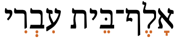
'Hebrew alphabet', alef-bet ivri, spelled out using diacritic points.
show composition
אָלֶף־בֵּית עִבְרִי
The Modern Israeli Hebrew orthography we are discussing here uses the following niqqud to represent vowel sounds.
ִ␣ֻ␣ֵ␣ֶ␣ֱ␣ֹ␣ֳ␣ְ␣ָ␣ַ␣ֲ
Redundancy arises because the modern orthography retains alternative points that in the past expressed length differences, whereas modern Israeli Hebrew pronunciation ignores phonetic length.
Three of the above code points have glyphs that combine the glyph for 05B0 (sh'va) with that of another point. These combinations were used in older Hebrew to indicate particularly short vowel lengths, and the spelling has been retained in modern Hebrew. The Unicode Standard recommends that you use a single, precomposed Unicode code point for each of these combinations. These precomposed characters don't decompose during normalisation.
ׇ␣ֺ
The two code points just above may be used, mostly in biblical texts or prayer books, to preserve fine typographic differences in usage. For more information, click on the characters.
Standalone vowels
In theory, Hebrew doesn't have any true standalone vowels, since vowels are always preceded by a consonant. However, when that consonant is a glottal stop, the stop is often dropped and in spoken Hebrew a vowel then occurs at the beginning of a word or word-medially after another vowel.
These vowels are always written with a base consonant, which is usually one of 05D0 or 05E2. The alef is by far the most common when word initial.
אֵזוֹר
אוֹתְיוֹם
עֵץ
עוֹלָם
בעיה
גַּבְרִיאֵל
Vowel length
Hebrew spelling points back to a time when there were different ways of writing long vowels, short vowels, and very short vowels. However, these vowel length differences have fallen away in modern Israeli Hebrew, and length, where it varies, is determined by phonetic context.
That said, echoes of historically long vowels can be found in the use of certain matres lectionis, particularly in pointed text.
Nasalisation
Nasalisation is not a phonemic feature of Hebrew.
Tones
Hebrew is not a tonal language.
Vowel sounds to characters
This section maps Hebrew vowel sounds to common graphemes in the Hebrew orthography, as found in the accompanying terms list. Click on a grapheme to find other mentions on this page (links appear at the bottom of the page). Click on the character name to see examples and for detailed descriptions of the character(s) shown.
Graphemes in full spelling are shown to the left, and pointed spelling is shown on the right. Note that sometimes these may differ more than just by addition of niqqud.
'Initial' means a vowel that follows an optional glottal stop, either word-initially or within a word.
Plain vowels
i
initial
אי אישה איראן.
ע עברית
אִ אִשָּׁה.
אִי אִירָאן.
עִ עִבְרִית
medial
05D9 נין
No marker. מסעדה
05B4 05D9 נִין
05B4 מִסְעָדָה
final
י פרי
יא הביא
05B4 05D9 פְּרִי
ִיא הֵבִיא
u
initial
או אולי
ו ובכן
עו עוגייה
אוּ אוּלַי
וּ וּבְכֵן
עוּ עוּגִיָּה
medial
ו אבולוציה
וּ אֶבוֹלוּצְיָה
final
ו הודו
וּ הֹדּוּ
e
initial
א אזור אפשר אלוה
ע עץ
אֵ אֵזוֹר
אֶ אֶפְשַׁר
אֱ אֱלֹהַּ
עֵ עֵץ
medial
No marker. בן ברז בהמות
ֵ בֵּן
ֶ בֶּרֶז
ְ בְּהֵמוֹת, but only in certain circumstances. For details of usage in modern Israeli, see Wikipedia.
final
ה אופה
א דשא ייבא
י אחרי
ֶה אוֹפֶה
ֶא דֶּשֶׁא
ֵא יִבֵּא
ֵי אַחֲרֵי
o
initial
או אופה אורנים
עו עוֹלָם
אוֹ אוֹפֶה
אֳ אֳרָנִים
עוֹ עוֹלָם
medial
ו אותיום אדום ציפורים
וֹ אוֹתְיוֹם
ֹ אָדֹם
ֳ צִפֳּרִים
final
ו יריחו
ה איפה
וֹ יְרִיחוֹ
ֹה אֵיפֹה
ə
Any of the five short vowels may be realized as a schwa when far from lexical stress.wp,#Vowels
a
initial
א אברהם אגם אמר
ע עקרב עבודה עש
אַ אַבְרָהָם
אֲ אֲגַם
אָ אָמַר
עַ עַקְרָב
עֲ עֲבוֹדָה
עָ עָשׁ
medial
No marker. אחת אזהרה אהבה
א איראן
ַ אַחַת
ָ אַזְהָרָה
ֲ אַהֲבָה
ָא אִירָאן
final
ה אדמה
ע ארבע
א אבא
ָה אֲדָמָה
ַע אַרְבַּע
ַא אַבָּא
Diphthongs
ij
05B4 05D9 05B0
ju
05D9 05D5 05BC
ui
05D5 05BC 05D9
ei
05B6 05D9
05B5
oi
05D5 05B9 05D9
ai
05B7 05D9, eg. לילה — לַיְלָה.
05B8 05D9, eg. ראיון — רֵאָיוֹן.
ao
05D0 05D5
Consonants
Basic consonants
These are the basic consonant letters used in modern Hebrew.
א␣עט␣ת␣ד␣ק␣גצפ␣ב␣ו␣ש␣ס␣ז␣ח␣כ␣ר␣המ␣נל␣י
Matres lectionis
Three of the letters can also represent vowel locations. See matres.
Repertoire extensions
Methods used to modify the sound of a consonant. See also cantillation.
Dagesh
05BC is used in pointed text with 3 consonant letters (and one final form) to indicate that they map to 'hard' sounds. This is similar to the distinction made in Syriac. Dagesh is the only diacritic to appear inside a consonant. Below, the hard sounds are shown to the left, and the normal to the right.
פּ␣בּ␣כּ␣ךּ␣ ␣פ␣ב␣כ␣ך
Dagesh can also be found alongside other letters, without any sound change, due to preservation of archaic spelling. The pairs t–θ, d–ð and ɡ–ɣ were lost over time, leaving:
05E9 represents two phonemes: ʃ and s. If it is necessary to indicate which is intended, one of two diacritics (used only with this character) are used: 05C2 and 05C1. They look identical, but the side to which they are positioned makes the difference.
שקל
משוש
Geresh
Certain consonants are extended to represent non-native sounds by use of a following 05F3.
This first set is used in loanwords and slang that are part of the everyday Hebrew colloquial vocabulary.ws,#Sounds_represented_with_diacritic_geresh
ג׳␣ז׳␣צ׳␣ו׳␣וו
The graphemes ו׳ and וו are alternative ways of writing the same thing.
A second set is only used to transliterate foreign sounds, especially Arabic.ws,#Sounds_represented_with_diacritic_geresh
ד׳␣ת׳␣ח׳␣ר׳␣ע׳
Vowel absence
In pointed text, 05B0 may be used to express an absence of vowel between two consonants. However, in various contexts the sh'va may indicate that the consonant is followed by a short, epenthetic vowel e.
אגרוף
בהמות
A word-final consonant typically doesn't take a diacritic. (See finals.)
אַנְגְּלִית
בָּחוּר
Onset consonants
Consonant clusters in syllable onsets are simply written using a sequence of consonant letters in full spelling text, and apply 05B0 in pointed text.
ברכה
גבול
Final consonants
Five letters have special word-final forms, called sofit. They are encoded as separate code points in Unicode, and appear as separate keys on a keyboard, so no special processing is needed to display or store them (unlike Arabic).
ץ␣ף␣ך␣ם␣ן
Foreign words and names may sometimes use the normal forms at the end of a word, rather than the sofit form. In those cases, use the non-final code points.
Consonants that are not followed by a vowel are normally written with 05B0 in pointed text, but not when they are word-final.
בִּגְלַל
אֶגְזוֹז
אָקוֹרְד
Observation: One exception appears to be ךְ.
בֶּרֶךְ
רַךְ
Consonant clusters
As with onsets, consonant clusters are simply written using a sequence of consonant letters in full spelling text, and are marked by 05B0 in pointed text. The offglide of a diphthong is written in the same way.
גמבה
בייגל
Consonant length
From Wikipedia: gemination is not adhered to in modern Hebrew and is only used in careful pronunciation, such as reading of scriptures in a synagogue service, recitations of biblical or traditional texts or on ceremonious occasions, and then only by very precise readers.
In pre-Modern Hebrew, gemination was indicated using 05BC.
Consonant sounds to characters
This section maps Hebrew consonant sounds to common graphemes in the Hebrew orthography. Click on a grapheme to find other mentions on this page (links appear at the bottom of the page). Click on the character name to see examples and for detailed descriptions of the character(s) shown.
Sounds listed as 'infrequent' are allophones, or sounds used for foreign words, etc.
Graphemes in full spelling are shown to the left, while pointed spelling and word-final forms are shown on the right.
Stops
p
05E4 פונדק
05E4 05BC פּוּנְדָק
b
05D1 בן
05D1 05BC בֵּן.
t
05D8 קט.
05EA תות.
05EA 05BC. Archaic spelling, still found sometimes in pointed text. תּוּת.
d
05D3 דוד.
05D3 05BC. Archaic spelling, still found sometimes in pointed text. דּוּד.
k
05E7 קול
05DB הכה
05DB 05BC הִכָּה
05DA 05BC Rare, final form. ממּךּ
ɡ
05D2 גג
גּ Archaic spelling, still sometimes used in pointed text. גַּג
ʔ
05E2 מועיל
05D0 שאל
Affricates
t͡s
05E6 ציץ
05E5 Word-final. ציץ
t͡ʃ
05E6 05F3 Used in loanwords and slang. ריצ׳רץ׳
05E5 05F3 Word-final. ריצ׳רץ׳
d͡ʒ
05D2 05F3 Used in loanwords and slang. ג׳וק
Fricatives
f
05E4 פיספס
05E3 Word-final. כנף
v
05D1 טוב
05D5 וו
05D5 05D5 when word-medial in full spelling. צוואר
θ
Foreign sound.
05EA 05F3 ת׳רסטון.
ð
Foreign sound.
05D3 05F3 ד׳ו אל-חיג׳ה.
s
05E1 סוף
05E9 משוש
05E9 05C2 Explicit form, used in pointed text to distinguish from ʃ שָׂם
z
05D6 זה
ʃ
05E9 שקל
05E9 05C1 Explicit form, used in pointed text to distinguish from s. שֶׁקֶל
ʒ
05D6 05F3 Used in loan words & slang. ז׳רגון
χ
05DB סכך
05D7 חם
05D7 05F3 Used to indicate that this sound should be used rather than h in non-Hebrew (esp. Arabic) text. שייח׳
05DA Word final.
ʁ
05E8 עיר
05E8 05F3 Explicitly indicates the sound for Arabic transliteration. ר׳ג׳ר
In Biblical and older Hebrew texts, many additional diacritics are attached to the base character alongside the niqqud. Nearly all of the following additional marks in the Hebrew Unicode block are cantillation marks, used to indicate how to chant ritual readings from the Hebrew Bible in synagogue services.
Hebrew text makes use of a set of invisible formatting characters, especially in plain text, most of which are used to manage text direction. Descriptions of these characters can be found in the following section:
use of precomposed vs decomposed for shva compounds
holam hazer should not be used with any other character than VAV
don't use the Yiddish digraphs
Numbers
Hebrew uses the same digits as the Latin script.
For about a thousand years from the 2nd century BC, Hebrew used letters as numbers. Nowadays, they are only used this way for the Hebrew calendar, for school grades, for counter styles, and in religious contexts. See cs_additive in the section about counter styles for more information.
Currency
₪
The denomination is generally expressed by the following abbreviationwhp, which stands for שקל חדש:
ש״ח
20AA may also be used. It is displayed to the left of the amount, with no separation or with a thin space, eg.
₪12,000
Observation: Wikipedia says that this requires the sheqel sign to be typed after the amount, however, the opposite is the case for all major browsers.whp
Text direction
Hebrew script is written right-to-left in the main, but as with most RTL scripts, numbers and embedded LTR script text are written left-to-right (producing bidirectional text). In the following example, the Hebrew words are read right-to-left, starting with the one on the right, and the numeric expression ("10-12") is read left-to-right, ie. it starts with 10 and ends with 12. (Note that this is unlike Arabic, where the 10 and 12 would be in opposite positions.)
התאריכים 10-12 במרץ
Bidirectional Hebrew text.
Characters in Unicode text are typed and stored in 'logical' order, ie. the order in which they are pronounced. The Unicode Bidirectional Algorithm then steps in when text is printed or displayed to rearrange the text as needed. It automatically takes care of the ordering for all the text in fig_bidi, as long as the 'base direction' is set to RTL. In HTML this can be set using the dir attribute (which also sets the alignment of the text), or in plain text using formatting controls.
If the base direction is not set appropriately, the directional runs will be ordered incorrectly as shown in fig_bidi_no_base_direction, and can become unreadable.
ב־HMTL5 זה מתבצע על ידי הוספת אלמנט ה־inline bdo.
ב־HMTL5 זה מתבצע על ידי הוספת אלמנט ה־inline bdo.
The exact same sequence of characters with the base direction set to RTL (top), and with no base direction set on this LTR page (bottom).
On this page, see also expressions and linebreak for additional features related to direction.
Managing text direction
Unicode provides a set of 10 formatting characters that can be used to control the direction of text when displayed. These characters have no visual form in the rendered text, however text editing applications may have a way to show their location.
202B (RLE), 202A (LRE), and 202C (PDF) are in widespread use to set the base direction for an inline range of characters. RLE/LRE come at the start, and PDF at the end of a range of characters for which the base direction is to be set.
More recently, the Unicode Standard added a set of characters which do the same thing but also isolate the content from surrounding characters, in order to avoid spillover effects. They are 2067 (RLI), 2066 (LRI), and 2069 (PDI). The Unicode Standard recommends that these be used instead.
There is also 2068 (FSI), used initially to set the base direction according to the first recognised strongly-directional character.
200F (RLM) and 200E (LRM) are invisible characters with strong directional properties that are also sometimes used to produce the correct ordering of text.
A sequence of numbers, for example a range separated by hyphens, generally runs left to right in Hebrew (unlike Arabic).
Glyph shaping & positioning
This section brings together information about the following topics:
writing styles;
cursive text;
context-based shaping;
context-based positioning;
baselines, line height, etc.;
font styles;
case & other character transforms.
The Hebrew script is not usually cursive (ie. joined up) when printed.
The script makes no case distinctions and needs no transforms to convert between code points.
Font styles
Hebrew has a number of different writing styles.
The standard, 'square script' is derived from Aramaic. There are serif and sans-serif fonts.
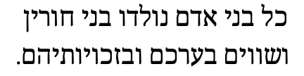
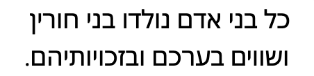
Serif (top) and sans (bottom) examples of the standard writing style.
The STAM style is used for sacred texts such as the Torah. Certain letters have decorative tags above.s
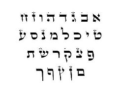
Text written in the STAM writing style.
The rashi style is used for commentaries on sacred texts. Letters have a more rounded, almost cursive style.s
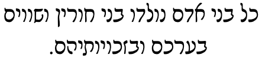
Text written in the rashi writing style.
Hebrew also has a 'cursive' style, which means 'handwriting' style. Letters are not normally joined. Cursive fonts are only used as display fonts. Many glyphs look very different from the standard letter forms.
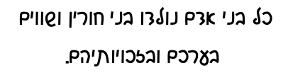
Text written in the 'cursive' writing style.
Before the Babylonian exile (from which the square script derives), Hebrew was written with different shapes, which are similar to those used for Samaritan.
Context-based shaping & positioning
In Hebrew several characters have a different shape at the end of a word, but each shape variant has it's own code point and keyboard key, so there is no need for rendering rules to choose the correct glyph.
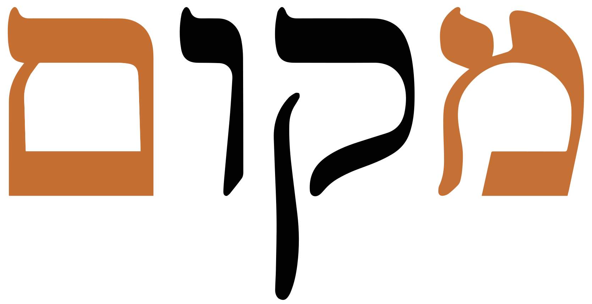
Two different shapes for mem, depending on position in the word.show composition
מקום
Multiple diacritics for one base character are common where the various types of diacritic are mixed.
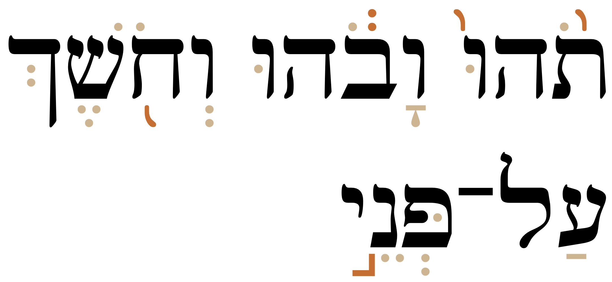
Text using a mixture of vowel (light highlight), consonant, and cantillation (dark highlight) diacritic points.
Combinations of 05B0 with other vowel diacritics are represented by single, non-decomposable code points, eg. 05B1.
In NFC normalised text, a dagesh or shin/sin dot always follows the vowel diacritic. It may be necessary to reorder the diacritics for some applications, eg. for transcriptions that map a consonant+dagesh to a single letter.
The diacritic 05B9 illustrates how positioning can be context-sensitive. fig_holam shows 3 examples.
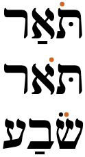
Three slightly different placements of 05B9, depending on the surrounding context.
Letterform slopes, weights, & italics
Bold text is used as one way to highlight or emphasise text. The degree of bolding is often quite light. Bold-italic is typically only used for large display text.l
Italics may also be used, however its use is not abundant, and many of the italic faces in fonts are designed for display use, rather than to accompany a regular font.l
There are different preferences for the direction of the slant for italicised Hebrew text. The choice as to which is preferred appears to be down to the individual, and is a question of whether the slant matches the direction of the Hebrew text, or embedded Latin text.l
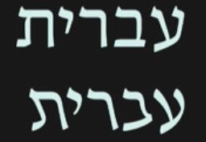
Example of forward-leaning italics (bottom).show composition
עברית
Graphemes
Grapheme clusters
Hebrew typographic units consist of base characters, optionally followed by one or more combining marks. Unicode grapheme clusters can be applied to Hebrew without problems. There are no special issues related to operations that use grapheme clusters as their basic unit of text.
Punctuation & inline features
Word boundaries
Words are separated by spaces.
Hyphens.05BE is the proper punctuation for representing hyphens between compounds,wc.
תל־אביב
However, it is less common online because it is not always easily available on keyboards. Therefore, - U+002D HYPHEN-MINUS is often substituted, even though the position of that character is too low when displayed.wc
The Unicode Standard indicates that lines should not break on either side of the maqaf.g
Phrase & section boundaries
,␣;␣:␣.␣?␣!
Hebrew uses ASCII punctuation for the most part. Full stops, question marks, exclamation marks, and commas are used as in English. There are 6 additional punctuation characters in the Hebrew Unicode block.
phrase
002C
003B
003A
sentence
002E
003F
0021
Note that the direction of the question mark (?) is the same as in English, and not reversed like for Arabic. The same is true for the comma ( , ).
Biblical & liturgical usage.׀ is used as a word separator.wc
Prayer books and similar use ׃ as a full stop.wc
Bracketed text
(␣)
Hebrew commonly uses ASCII parentheses to insert parenthetical information into text.
Hebrew uses the same parentheses as English, and uses (U+0028 LEFT PARENTHESIS] at the start (right) and )U+0029 RIGHT PARENTHESIS] at the end (left).wc These are mirrored characters in Unicode, so the glyph for each character is automatically reversed in RTL text.
For example, click on the following to see the component characters.
(סוגריים)
The first character in memory is the paren on the right. The consequence of this is that, when writing Hebrew, the parentheses should be used as if they were named U+0028 START PARENTHESIS and U+0028 END PARENTHESIS, respectively.
Quotations & citations
”␣”␣’
Hebrew texts use quotation marks around quotations. Note, however, that these are not paired. Of course, due to keyboard design, quotations may also be surrounded by ASCII double and single quote marks.
Up to around 1970 Hebrew used 201E instead for the initial quotation mark, ie. „ישראל”but this changed, partly due to inadequate keyboard designs.whp,#Quotation_marks
Emphasis
Increased tracking is a common way to express emphasis in Hebrew.
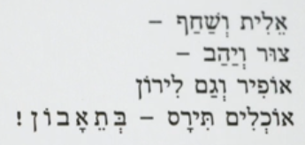
The last part of this text is stretched to show emphasis.
Aternatives include the use of a different typeface, and/or underlining.l
Abbreviation, ellipsis & repetition
״␣׳
Acronyms and abbreviations are indicated by placing 05F4 before the last character.
אונסכ״ו
סופ״ש
05F3 may also be used to indicate an abbreviation,wg eg. גברת is abbreviated as
גב׳
Due to keyboard inadequacies, these are often replaced by ASCII single and double quote characters, even though in general they are visually too high.
Inline notes & annotations
tbd
Other punctuation
tbd
Other inline text decoration
Text can be highlighted using bold, italic, different fonts, font sizing, colour, or tracking.
Line & paragraph layout
Line breaking & hyphenation
Lines are normally broken at word boundaries.
Breaking between Latin words
When a line break occurs in the middle of an embedded left-to-right sequence, the items in that sequence need to be rearranged visually so that it isn't necessary to read lines from top to bottom.
latin-line-breaks shows how two Latin words are apparently reordered in the flow of text to accommodate this rule. Of course, the rearragement is only that of the visual glyphs: nothing affects the order of the characters in memory.
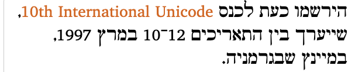
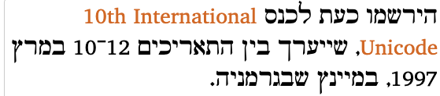
The lower of these two images shows the result of decreasing the line width, so that text wraps between a sequence of Latin words.
Line-edge rules
As in almost all writing systems, certain punctuation characters should not appear at the end or the start of a line. The Unicode line-break properties help applications decide whether a character should appear at the start or end of a line.
The following list gives examples of typical behaviours for some of the characters used in modern Hebrew. Context may affect the behaviour of some of these and other characters.
Click/tap on the characters to show what they are.
’ ” ( should not be the last character on a line.
’ ” ) . , ; ! ? ־ % should not begin a new line.
₪ should be kept with any number, even if separated by a space or parenthesis.
Text alignment & justification
tbd
Text spacing
Increased tracking is a common way to express emphasis in Hebrew.
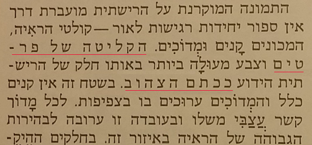
Examples of letter-spacing (highlighted by the red lines) in Hebrew text.
Baselines, line height, etc.
Hebrew uses the so-called 'alphabetic' baseline, which is the same as for Latin and many other scripts.
The Hebrew characters are commonly slightly taller than the Latin x-height. fig_baselines shows ascenders and descenders for Hebrew letters in the Noto Serif fonts. In this font combination the maximum height of the Hebrew letters reaches slightly higher than the Latin extenders.
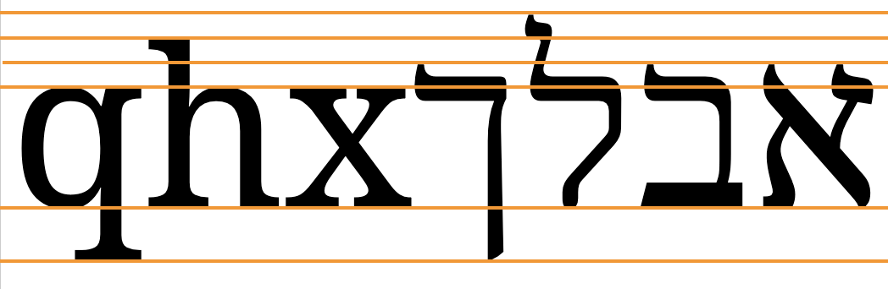
Font metrics for text in the Noto Serif and Noto Serif Hebrew fonts.
Counters, lists, etc.
You can experiment with counter styles using the Counter styles converter. Patterns for using these styles in CSS can be found in Ready-made Counter Styles, and we use the names of those patterns here to refer to the various styles.
The Hebrew orthography uses an additive style, in addition to numeric decimal style based on ASCII digits.
Additive
The hebrew additive style uses the letters shown below. It is specified for a range between 1 and 10,999. This system manually specifies the values for 19-15 to force the correct display of 15 and 16, which are commonly rewritten to avoid a close resemblance to the Tetragrammaton. Implementations may, and some do, implement this manually to a higher range.
The default list style uses a full stop + space as a suffix.
Examples:
א. ב. ג. ד. ה.
Separator for Hebrew list counters.
Styling initials
It is possible to find the first letter in a paragraph styled so that it is larger and sits alongside several lines of the continuing paragraph text.
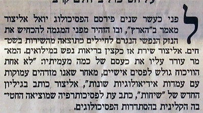
An enlarged initial letter in the word לפגי at the beginning of a paragraph.
Observation: The glyph in fig_drop_cap rises above the normal top line of most Hebrew characters. It also rises above the top line of the adjacent glyphs when positioned alongside them. The bottom of the glyph is aligned with the bottom of the glyphs on the 3rd line down.
Boxed initials can also be found, such as the one in fig_drop_cap_box.
Here, the initial letter is centred horizontally and vertically inside the space created by the box. The box extends from the top line of the first line of text to the baseline of the 6th line.
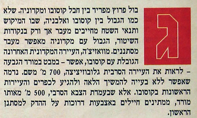
An enlarged initial letter in the word גבול at the beginning of a paragraph, set in a box.
Page & book layout
This section is for any features that are specific to thisScript and that relate to the following topics:
general page layout & progression;
grids & tables;
notes, footnotes, etc;
forms & user interaction;
page numbering, running headers, etc.
General page layout & progression
Hebrew books, magazines, etc., are bound on the right-hand side, and pages progress from right to left.
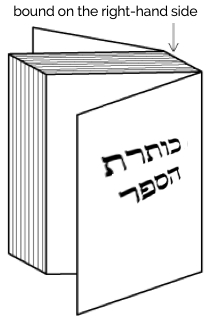
Binding configuration for Hebrew books, magazines, etc.
Columns are vertical but run right-to-left across the page.
Acknowledgements
Many thanks for detailed review and comments by Ben Denckla.